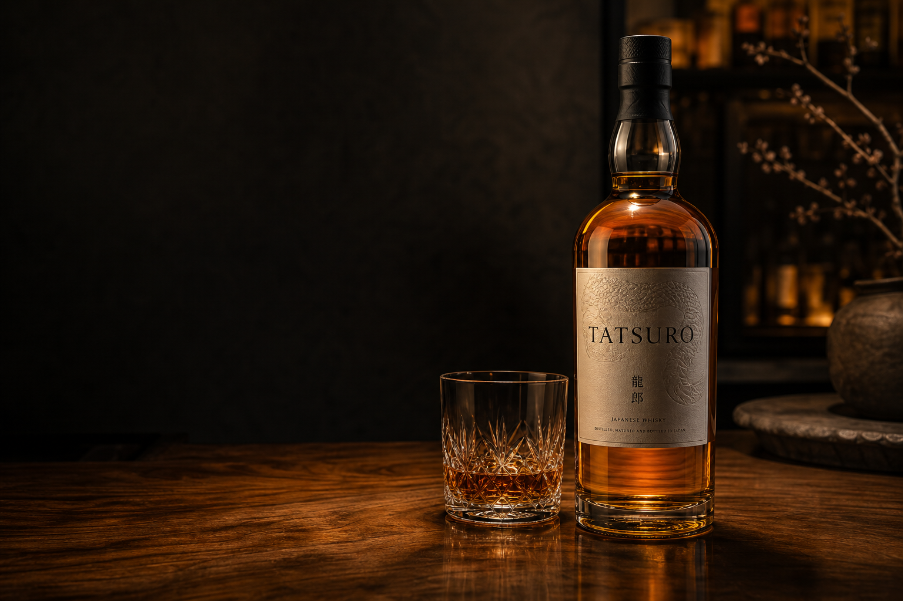

Concept
静けさを、味わいに変える。
TATSUROは、強さよりも余韻を大切にする架空のジャパニーズクラフトウイスキーです。 夜の終わりに、ひと口で空気が静まることを目指しました。
StyleJapanese blended malt whisky
ABV46%
Volume700ml
ServeNeat / Water / Highball
Tasting Notes
香り、味、余韻。
Color
深い琥珀色
Nose
洋梨、白檀、軽いハチミツ
Palate
麦芽、ドライアプリコット、やわらかなオーク
Finish
短く消えず、静かに続くスパイス
最初の一杯はストレート。少量の加水で香りの層が開く設計です。
Craft
急がない工程で、輪郭を整える。
小規模蒸留、複数樽の後熟、低温濾過を避けた設計。派手さより、記憶に残る静かな均衡を狙います。
Cask
アメリカンオークの明るさを土台に、深みのある香味を重ねる。
Blend
強さよりも均整を重視し、甘さと木の香りのバランスを取る。
Serve
Neat、water、highballで表情が変わる。飲み方で余韻の長さが変わる設計。
Invitation
初回案内を、静かに受け取る。
ブランドの世界観、限定ボトル、試飲イベントの案内をメールで受け取れます。
20歳未満の飲酒は法律で禁止されています。飲酒運転は絶対にやめましょう。